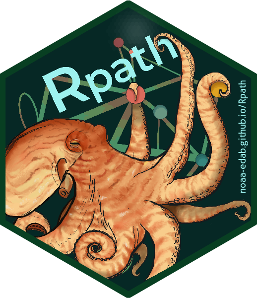

Reads in EwE exported XML file and parses into data frames
Source:R/xml_convert.r
import.eiixml.RdParses an eiixml file exported using the Ecopath with Ecosim (EwE) GUI into a list of data frames,
one frame for each table in the exported XML file. This function is usually called by the function create.rpath.from.eiixml() that
converts these tables into an unbalanced rpath model object. However import.xml can be used on its own to examine the full set
of tables exported by EwE, including tables not currently imported into Rpath objects, such as Ecosim runs or model metadata.
This function was tested on files exported by EwE version 6.7.
Value
A list of data frames, one data frame for each node (exported EwE table) in the XML file. Each table has the naming convention ewe_[table name] where [table name] is the name of the table provided by EwE.
See also
Other xml:
create.rpath.from.eiixml()
Examples
# Import an eiixml file previously exported from the EwE GUI into a list of
# data frames containing the model data
eiixml <- system.file("extdata/xml","Western_Bering_Sea.eiixml", package = "Rpath")
xml_data <- import.eiixml(eiixml)